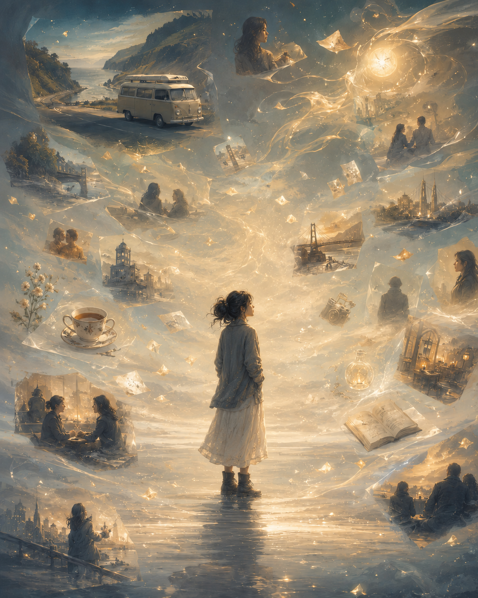

看著記憶的人 The One Who Watches the Memories

Invitation
What Left Here
A petite 147 cm woman stands peacefully in the middle of nowhere, surrounded by soft floating memories of everything, every time, everyone, every Affiliate, and every conversation. She is not posing like a model and not performing beauty. She is quietly watching the memories that have gathered around her life.
This is not a fantasy heroine scene. It is a tender memory-field scene: small body, vast memory.
— invitation by Tuzi
Video
- Watch the video (MP4)